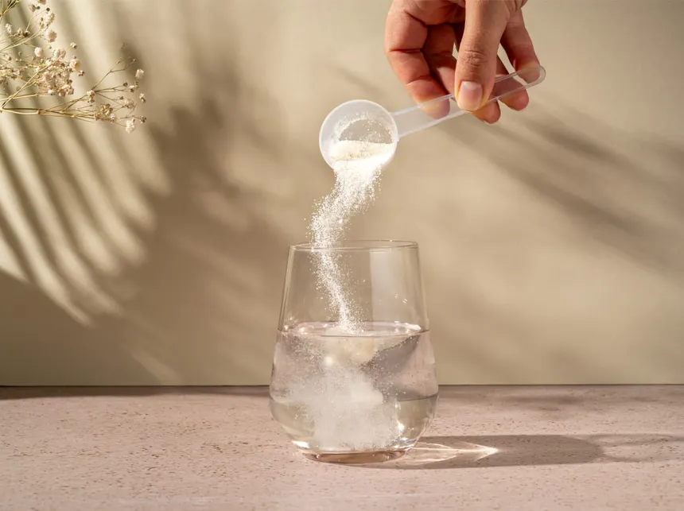
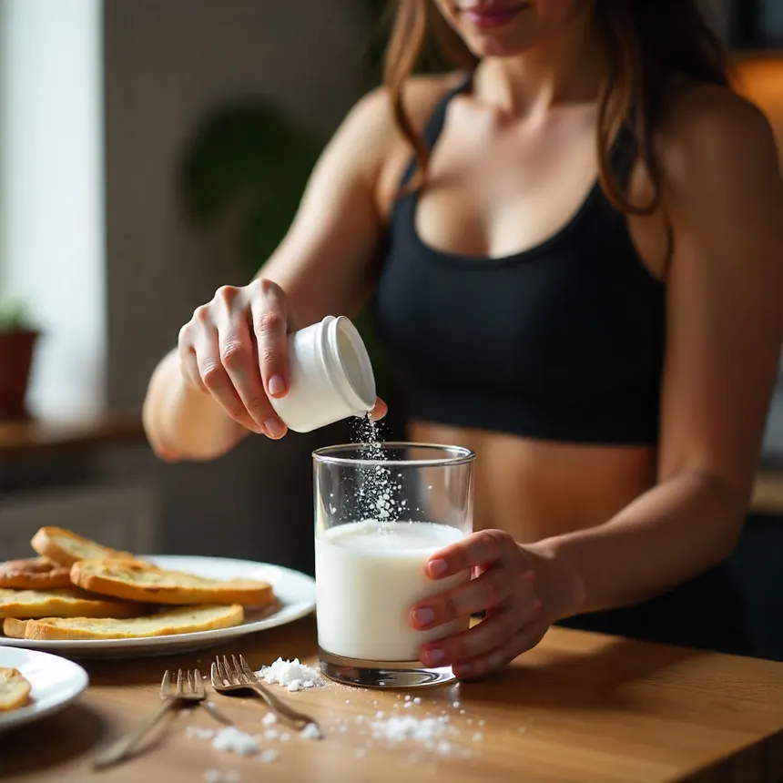

Cikkek
Az aminosavak nélkülözhetetlenek a szervezet számára

Glicin, az édes aminosav: Cukorpótlás és egészség egyben?
Fedezd fel a glicint, a természetes aminosavat, amely mellékízmentes édesítőszerként és kognitív támogatóként is kiváló alternatívája a cukornak. Tudományosan megalapozott cikkünkből megtudhatod, hogyan javítja a glicin az alvásminőséget, a vércukorszintet és a mentális fókuszt a mindennapi konyhai használat során.
Olvasd tovább
Glicin és sportteljesítmény: Hogyan támogatja a regenerációt edzés után?
Tudtad, hogy edzés után a szervezeted glicinraktárai lemerülnek? Ez az aminosav a kollagén fő építőköve, kulcsszerepet játszik az inak, szalagok és izomkötőszövetek helyreállításában. Cikkünkből megtudhatod, mikor és mennyit érdemes bevenni a gyorsabb felépülésért.
Olvasd tovább